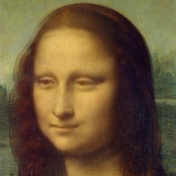

The Mona Lisa Effect, c. 2020
Emily Xie
Mixed Media; Tensorflow, First Order Motion Model, JS
Urban legend says that Mona Lisa's eyes follow you as you move around the room. If you enable your webcam, the eyes of this digital portrait will do just that.
Notes: This site will not save any of your data. Also, it does not work well on mobile.